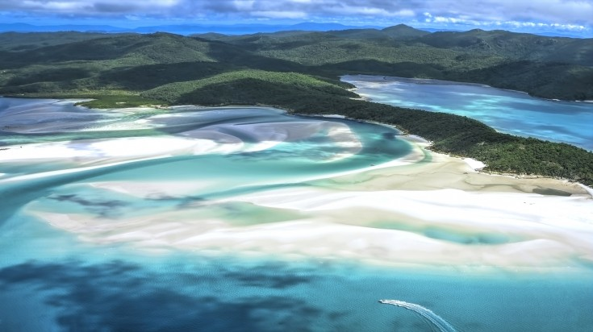
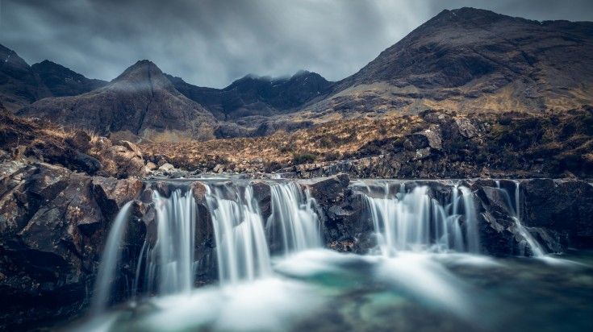

Cappadocia, a semi-arid region in central Turkey, is known for its distinctive “fairy chimneys,” tall, cone-shaped rock formations clustered in Monks Valley, Göreme and elsewhere. Other notables sites include Bronze Age homes carved into valley walls by troglodytes (cave dwellers) and later used as refuges by early Christians. The 100m-deep Ihlara Canyon houses numerous rock-face churches
2. Whitehaven Beach, Whitsundays, Australia

Whitehaven Beach is on Whitsunday Island, Australia. The island is accessible by boat, seaplane & helicopter from Airlie Beach, as well as Hamilton Island. It lies across from Stockyard Beach, better known as Chalkie's Beach, on Haslewood Island.
3. The Fairy Pools, Isle of Skye, Scotland

You might suddenly start believing in fairies the moment your eyes fall on the Fairy Pool, an ethereal oasis that bewitches visitors with its crystal clear water, picture-perfect scenery and magical atmosphere. The waters are freezing, but if you’re searching for wild swimming adventures, it truly doesn’t get better than this. And if you’re not as adventurous, a mere walk around the area, exploring aqua blue pools, each more appealing than the other, is sure to leave you in high spirits. The place also has its own infinity pool, bounded by a beautiful stone wall!
4. Grand Canyon National Park, USA
Grand Canyon National Park, in Arizona, is home to much of the immense Grand Canyon, with its layered bands of red rock revealing millions of years of geological history. Viewpoints include Mather Point, Yavapai Observation Station and architect Mary Colter’s Lookout Studio and her Desert View Watchtower.
5. Huacachina, Peru
Huacachina is a desert oasis and tiny village just west of the city of Ica in southwestern Peru. At its center are the green waters of the Huacachina Lagoon, ringed by palm trees and thought to have therapeutic properties. The lagoon's shores are dotted with bars and clubs.
6. Salar de Uyuni, Bolivia
Salar de Uyuni, amid the Andes in southwest Bolivia, is the world’s largest salt flat. It’s the legacy of a prehistoric lake that went dry, leaving behind a desertlike, nearly 11,000-sq.-km. landscape of bright-white salt, rock formations and cacti-studded islands. Its otherworldly expanse can be observed from central Incahuasi Island.